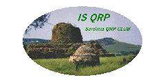

IS-QRP:
Associazione Radioamatoriale Sardinia QRP Club
(Sardiniens radioamatörförenings QRP-klubb)
Lågeffektklubb från Sardinien. Mottot är: "Bygg, Lär, Lär ut".
Tillbaka
till listan över klubbar
Tillbaka
till EuCWs startsida
{% include translated.html %}